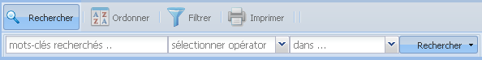

La barre d'outils des éléments de
données
Fonction «
Rechercher » des éléments de
données

Chercher un élément de données :
- Cliquez sur le bouton « Rechercher
» de la barre d'outils; les options disponibles du
sous–menu de recherche apparaitront en bas de la barre
d'outils;
- Entrez la (les) expression (s) de recherche
dans le premier champ texte du sous–menu de recherche. Les
expressions peuvent être en majuscules, minuscules,
avec ou sans accent. Si vous entrez plusieurs
expressions, séparez–les par un
espace;
- Sélectionnez un opérateur de la
liste déroulante du deuxième champ. Cliquez sur le
bouton pour ouvrir la liste déroulante des
opérateurs. Cette étape est optionnelle, si aucun
opérateur n'est sélectionné,
l'opérateur par défaut est « égal
»;
- Sélectionnez si vous désirez
réaliser la recherche par le nom des « Vues » ou par les « Descriptions » des vues. Cliquez sur
le bouton pour ouvrir la liste déroulante. Cette
étape est optionnelle, la valeur par défaut est
« Vues »;
- Cliquez sur le bouton « rechercher
».
Note: la fonction de
recherche ne retourne pas des résultats si vous
séparez les expressions par des virgules;
Les résultats sont présentés dans la
grille principale du dictionnaire. Si aucun résultat n'est
affiché, ça signifie que la fonction de recherche
n'a rien trouvé par les critères
sélectionnés. Vérifiez que les expressions
utilisées pour la recherche ne contiennent pas de fautes
d'orthographie et dans le cas d'entrer plusieurs expressions
qu'elles soient séparées par des espaces en
blanc.
Cliquez sur le bouton situé du côté droit
du bouton « rechercher », ensuite cliquez sur
« supprimer les filtres
».